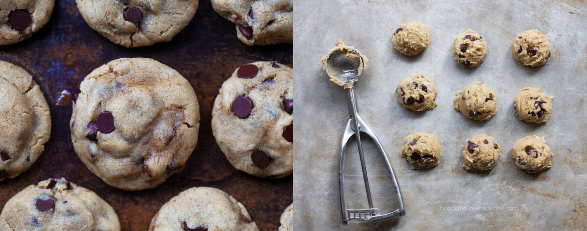

Two recipes that taste just as good as each otherChocolate Chip Cookies

Makes 20 CookiesChocolate Chip Cookies
Ingredients:
3/4 cup granulated sugar
3/4 cup packed brown sugar
1 cup butter, softened
1 teaspoon vanilla
1 Egg
2 1/4 plain lour
1 teaspoon baking soda
1/2 teaspoon salt
2 cups chocolate chips
1 cup coarsely chopped nuts (optional)
Method:
Heat oven to 190ºC
In a bowl, beat the sugars, butter, vanilla and egg until well blended.
Stir in flour, baking soda and salt (dough will be stiff).
Stir in chocolate chips and nuts.
Drop dough by rounded tablespoonfuls about 2 inches apart onto greased baking tray.
Bake for 8 to 10 minutes or until light brown. Cool for 1 to 2 minutes, remove from the baking tray. Transfer to a wire rack and let cool.
Makes 16 CookiesVegan Chocolate Chip Cookies
Ingredients:
1 cup white, oat, or spelt flour
1/2 teaspoon baking soda
1/4 teaspoon salt
1/4 cup sugar,
1/4 cup brown sugar
1/3 cup dark chocolate chips
2 tablespoon nut milk of choice, plus more if needed
2 tablespoon oil
1/4 teaspoon pure vanilla extract
Method:
Combine all the dry ingredients into a bowl and mix.
Mix in all the wet ingredients to form a dough, it will be dry at first but keep mixing until cookie-dough texture is achieved. If needed add an extra 1-2 tbsp of milk.
Refrigerate for at least 2 hours, until the dough is cold.
Preheat the oven to 160 ºC
Form the dough into balls and place on a baking tray, allowing enough room for the cookies to spread.
Bake for 10-12 minutes. Let them cool for on the baking tray for 10 minutes, to allow the cookies to firm up.